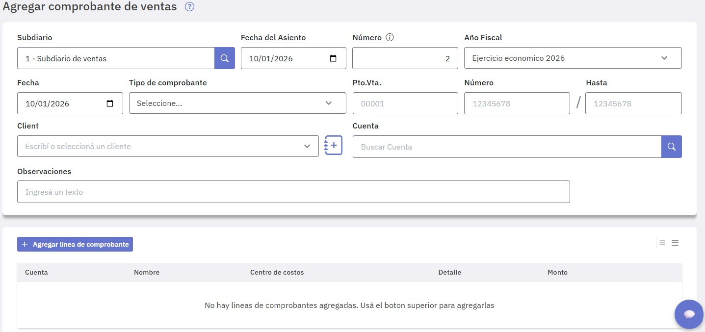
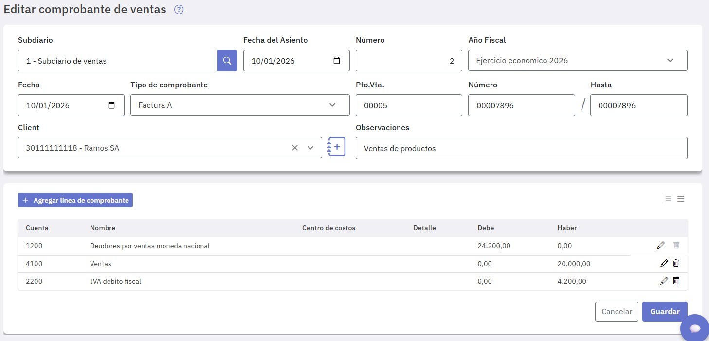
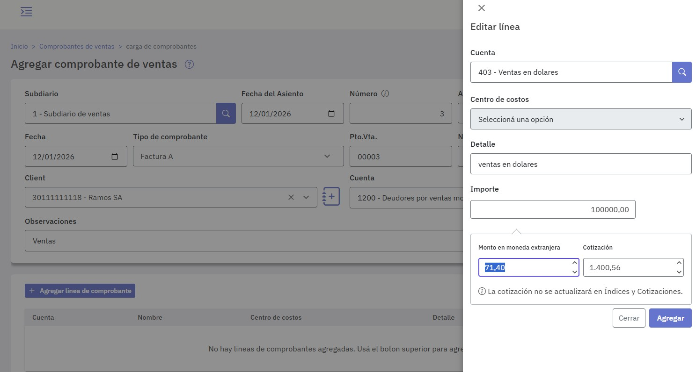

Comprobantes de ventas
Este menú está destinado a registrar comprobantes de venta en un determinado subdiario del mismo tipo, modificarlos o eliminarlos.
Al ingresar verás los comprobantes ingresados en el Año Fiscal abierto y activo, éste se muestra en la esquina superior derecha de la pantalla. Podés registrar comprobantes en este año y también, si fuese necesario, hacerlo en otro año fiscal seleccionalo desde allí, siempre y cuando éste se encuentre abierto.
Cualquiera sea el caso, para registrar un nuevo comprobante presioná "Agregar comprobante".

Tenés que completar los datos de la pantalla que se presenta:

Los campos relevantes a completar son:
Ingresados los datos del encabezado, estás en condiciones de ingresar las líneas del comprobante, presionando el botón "Agregar línea de comprobante".

Completá los datos que se solicitan:

Presioná "Agregar" para incorporar la línea al comprobante.
Una vez ingresadas todas las líneas, presioná "Guardar" para grabar el comprobante.

El comprobante registrado, ya está incorporado al subdiario seleccionado.

Si editás un comprobante ya registrado verás las cuentas involucradas mostrando los importes imputados al debe y haber y podés modificar lo que corresponda.

En caso que estés registrando un comprobante cuyas líneas correspondan a cuentas que tengan asociada una tabla de cotizaciones se incorporan como datos de la línea los siguientes, que deberás completar:
- Monto en moneda extranjera
- Cotización
Se exhibe la cotización registrada en la tabla correspondiente a la fecha, que podes modificar; el campo "Monto en moneda extranjera" exhibe el monto resultante en base al importe ingresado.
También podés ingresar el importe en moneda extranjera y la cotización se actualizará en base al importe registrado.
